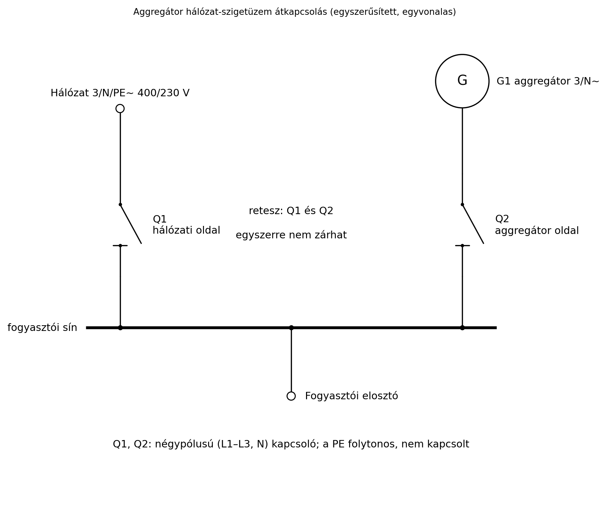

![Szinkron motor V-görbéi (szemléltető modell) - Szemléltető, fázorábrából számolt értékek (ellenőrizendő modell): U_f = 231 V, X_s = 1,2 Ω, E = 57,7 V/A · I_f (üresjárásban I_f0 = 4 A-nél E = U_f), I_p = P/(√3·400 V); I_q = (U_f − √(E² − (X_s·I_p)²))/X_s, I_s = √(I_p² + I_q²). A görbék bal vége a stabilitási határ (E = X_s·I_p). A minimum (cos φ = 1) a terheléssel nagyobb gerjesztés felé tolódik: P = 0-nál 4 A, 50 kW-nál 4,3 A, 100 kW-nál 5,0 A; ettől balra induktív, jobbra kapacitív jellegű a gép.](assets/ve100-plot-1.png)
Képzeld el, hogy egy üzem tartalék áramforrásaként szinkron generátort hajtó dízelaggregátort szerelnek. A hálózati feszültség kimarad, a gép elindul, de a generátort csak akkor szabad a fogyasztói hálózatra kapcsolni, ha a feszültsége, frekvenciája és fázishelyzete megfelelő. Ha egy pillanattal korábban vagy később kapcsolsz, akkora áramlökés keletkezhet, amely tönkreteheti a kapcsolókészüléket, a generátor tekercselését vagy a hajtómotort. Ugyanez a kérdés merül fel akkor is, amikor egy szinkron gépet szándékosan párhuzamosan akarunk kötni a közcélú hálózattal.
A másik oldalról: ha egyszer már hálózaton üzemel a szinkron gép, a gerjesztőáram állításával nem a hatásos teljesítményt, hanem elsősorban a meddőteljesítményt tudod szabályozni. Ezért a szinkron gép nemcsak generátor, hanem „forgó fázisjavító” is lehet: felesleges meddőt ad le, vagy éppen meddőt vesz fel, attól függően, hogyan gerjeszted. Ezt a viselkedést mutatja a V-görbe, amelyet a gyakorlatban is használnak az üzemállapot megítélésére.
Ebben az alfejezetben a szinkronozás feltételeit, a V-görbét, a szinkron kompenzátort és az aggregátorok átkapcsolását tanulod meg. Biztonsági korlát. A hálózati feszültségű (230/400 V) munka, az aggregátor bekötése és a szinkronozás csak jogosult személy felügyeletével végezhető; tanulóként önállóan ne próbáld.
Egy háromfázisú szinkron generátort akkor kapcsolhatunk hálózatra, ha a kapcsoló két oldalán a feszültségek minden pillanatban közel azonosak. Ezt úgy képzelhetjük el, mint két fázort, amelyeknek a kapcsolás pillanatában egybe kell esniük. Ha a két fázor közötti szög nem nulla, a különbségük egy hajtó feszültséget hoz létre, amely a generátor és a hálózat közötti kis impedancián nagy áramot hajt. Ezért a szinkronozás nem más, mint a két feszültség-fázor egyeztetése.
A későbbiekben a V-görbe szemlélteti, hogy a gerjesztőáram változtatásával az állórészáram minimumon megy át. Ezt a görbét diagramon is bemutatjuk.
Definíció. Szinkronozásnak nevezzük azt a műveletet, amellyel egy szinkron generátort (vagy egy másik hálózatot) úgy kapcsolunk párhuzamosan a meglévő hálózattal, hogy a kapcsolási tranziens áram és nyomatéklökés a lehető legkisebb legyen.
Ahhoz, hogy a párhuzamos kapcsolás biztonságos legyen, az alábbi négy feltételnek kell egyidejűleg teljesülnie:
Törvény. Ha a két feszültség azonos nagyságú, de közöttük fázisszög van, a fázisfeszültségek különbségének nagysága:
ahol a fázisfeszültség. Ebből a közelítő kiegyenlítő áram:
ahol a generátor és a hálózat közötti eredő reaktancia fázisonként (a szinkron reaktancia és a hálózati impedancia összege). A képlet egyszerűsítő, mert a tranziens jelenségben a tranziens reaktancia is szerepet játszik, de a nagyságrendet jól mutatja.
Példa. Egy 400 V-os, 50 Hz-es hálózatra kell kapcsolni egy szinkron generátort. A generátor és a hálózat feszültsége megegyezik, de a szinkronozás pillanatában eltérés van. A generátor és a hálózat közötti eredő reaktancia fázisonként . Mekkora közelítő áramlökés várható?
Megoldás.
Adott: , tehát ; ; .
Keresett: .
Ez a gép névleges áramához képest sokszoros áram lehet; a védelmek leoldanak, és a mechanikai lökés is káros. Ezért a szinkronozás során a közeli állapotot kell eltalálni. ∎
Mérési módszerek. A szinkronozáshoz a gyakorlatban feszültségmérőt, frekvenciamérőt, fázissorrend-mérőt és szinkronoszkópot használnak. A szinkronoszkóp mutatja a fáziseltérést, és a kapcsolást a nulla fázisszög közelében lehet elvégezni. Nagyobb gépeknél automatikus szinkronozó berendezés végzi a kapcsolást. (ellenőrizendő: aktuális gyártói és hálózati engedélyesi előírások)
A Szinkron generátor és motor, gerjesztés alfejezetben láttuk, hogy a szinkron gép kapocsfeszültségét a gerjesztés és a fordulatszám határozza meg. Hálózatra kapcsolt gépen azonban a kapocsfeszültséget a hálózat rögzíti, ezért a gerjesztőáram változtatása nem a feszültséget, hanem a gép meddőteljesítményét változtatja meg.
Definíció. A V-görbe a hálózatra kapcsolt szinkron gép állórészáramát () ábrázolja a gerjesztőáram () függvényében, állandó hatásos teljesítmény mellett. A görbe V (vagy U) alakú, mert van egy gerjesztési érték, ahol az állórészáram minimális, és ettől jobbra-balra nő.
A V-görbét így értelmezzük:
Magyarázat. A szinkron motor fázisonkénti egyszerűsített feszültség-egyensúlya (fogyasztói előjellel, az állórész-ellenállást elhanyagolva): , ahol a gerjesztéstől függő belső feszültség, a hálózati fázisfeszültség, a szinkron reaktancia, az állórészáram. (Generátornál ugyanez alakban írható.) Az áram hatásos összetevőjét a tengelyterhelés (motornál) vagy a hajtógép (generátornál) szabja meg; a gerjesztés csak azt dönti el, hogy az áram a feszültséghez képest késik (induktív), fázisban van, vagy siet (kapacitív). Üresjárásban () az gerjesztésnél nem folyik meddő áram; terhelés alatt a ponthoz már tartozik, ezért a V-görbe minimuma a terheléssel nagyobb gerjesztés felé tolódik.
Ábra. A V-görbék szemléltető diagramja:
Az ábrán jól látszik, hogy nagyobb hatásos terhelésnél a V-görbe felfelé tolódik, mert a hatásos áramösszetevő nagyobb, és a minimuma (a pont) jobbra, nagyobb gerjesztés felé kerül. A görbék bal vége a stabilitási határ: ennél kisebb gerjesztésnél a terhelési szög elérné a 90°-ot, és a motor kiesne a szinkronizmusból.
A következő ábra a kidolgozott példa három állapotát (alulgerjesztett , , felülgerjesztett ) fázorábrán és a 100 kW-os V-görbén mutatja. Alulgerjesztésnél V, A (késő áram); -nél V V, A; felülgerjesztésnél V, A (siető áram). A HTML-kiadásban a gerjesztőáram és a terhelés csúszkával állítható, a fázorok és a munkapont élőben mozognak.

Kidolgozott példa – gerjesztés és meddőteljesítmény. Egy hálózatra kapcsolt szinkron motor hatásos teljesítménye , kapocsfeszültsége . A gerjesztést úgy állították be, hogy legyen. A gép névleges hatásos árama ekkor:
Ez az áram a V-görbe minimumpontjában van.
Most a gerjesztést csökkentjük (alulgerjesztés), aminek hatására a gép induktív jellegű lesz (a hálózathoz képest). A látszólagos teljesítmény:
A meddőteljesítmény:
Az állórészáram:
A gerjesztőáram csökkentése tehát megnövelte az állórészáramot 144 A-ról 180 A-re, miközben a hatásos teljesítmény változatlan maradt. A gép induktív meddőt vesz fel. Ha a gerjesztést a minimumponton túl növelnénk, a gép kapacitív meddőt adna le, és az állórészáram szintén nőne. ∎
Továbbvitt eredmény. A V-görbe és a gerjesztés–meddőteljesítmény kapcsolat a Fázisjavítás méretezése alfejezetben is előkerül, mert a szinkron gép meddőteljesítmény-szabályozásával is lehet fázisjavítást végezni.
Definíció. A szinkron kompenzátor olyan szinkron motor, amelyet tengelyterhelés nélkül, erősen felülgerjesztve járatnak, és amelynek feladata meddőteljesítmény termelése (kapacitív fogyasztóként viselkedik) a hálózat számára.
A szinkron kompenzátor működése a V-görbe felülgerjesztett tartományán alapul. Mivel a tengelyterhelés kicsi, a hatásos teljesítményfelvétel csak a veszteségek fedezésére szolgál, a gép így szinte tisztán meddőteljesítményt ad le. Ezzel ugyanazt a hatást érjük el, mint egy kondenzátorteleppel, de a meddőteljesítmény folyamatosan, finoman szabályozható a gerjesztőárammal.
Összefüggés. Ha egy hálózatrész -ről -re javítandó, a szükséges meddőteljesítmény a Teljesítmények és teljesítménytényező alfejezetből ismert képlettel:
Ezt a meddőteljesítményt egy megfelelő névleges teljesítményű szinkron kompenzátorral is elő lehet állítani.
Példa. Egy üzemi elosztó hatásos terhelése , teljesítménytényezője induktív. Cél . Mekkora meddőteljesítményt kell a szinkron kompenzátornak leadnia?
Először a szögek:
A szükséges meddő:
Tehát a kompenzátornak kb. 107 kvar kapacitív meddőt kell leadnia folyamatosan, a gerjesztés beállításával. ∎
A gyakorlatban a szinkron kompenzátorokat elsősorban nagyobb hálózatokban, ipari és közcélú állomásokon alkalmazzák, ahol a meddőigény gyorsan változik, és a folyamatos szabályozás előnyös. Háztartási méretű fázisjavításra továbbra is kondenzátortelepeket használnak, mert olcsóbbak és karbantartásmentesebbek.
Definíció. Az aggregátor olyan gépcsoport, amelyben egy belső égésű motor (dízel, gáz) hajt egy generátort, rendszerint szinkron generátort. Az aggregátor lehet szigetüzemi tartalék áramforrás, vagy a hálózattal párhuzamosan üzemelő egység.
Egy tipikus dízel-aggregátor részeit a következő ábra számozza. A dízelmotor (4) hűtőjét (1) ventilátor hűti, égési levegőjét a légszűrő (2) szűri, a füstgáz a hangtompítós kipufogón (3) távozik. A motor a tengelykapcsolón (5) át hajtja a szinkron generátort (6); a generátoron ül a vezérlőpanel (7) a kijelzőkkel és a vészleállítóval (8), a kimeneti megszakító (9) és a csatlakozókapcsok (10). Az indítóakkumulátor (11) a motor indítómotorját táplálja. A gépcsoport rezgéscsillapítókon (12) áll az alapkereten, amelyben az üzemanyagtartály (13) van; a test a földelőcsatlakozáson (14) át kapcsolódik a földelő-/EPH-rendszerhez.
Telepítéskor három dologra figyelj: a kipufogógázt zárt térből a szabadba kell vezetni, a hűtőnek és az égési levegőnek elegendő friss levegő kell, és a rezgéscsillapítókon álló gépcsoporthoz a kábelt hajlékony szakasszal kell bekötni. A fogyasztói hálózatra az aggregátor csak az alább tárgyalt reteszelt átkapcsolón át csatlakozhat. A HTML-kiadásban a részek rámutatásra rövid magyarázatot kapnak.
A legtöbb épület- és ipari alkalmazásban az aggregátor szigetüzemben dolgozik: a fogyasztói hálózatot a közcélú hálózattól leválasztva látja el árammal. Ilyenkor nincs szinkronozási feltétel a hálózattal szemben, de a gépnek önállóan kell tartania a feszültséget és a frekvenciát. A hálózatról szigetüzemre történő átkapcsolás kritikus, mert a hálózati oldalt és az aggregátort soha nem szabad egyszerre a fogyasztóra kapcsolni.
Szabály. Az átkapcsolásnak reteszeltnek kell lennie: a hálózati kapcsoló (Q1) és az aggregátor kapcsoló (Q2) közül egyszerre csak az egyik lehet zárva, kivéve, ha a berendezés kifejezetten hálózati párhuzamos üzemre készült és a hálózati engedélyes ezt engedélyezte. A visszatáplálás a hálózatba szigetüzem esetén tilos, mert áramütést okozhat a hálózati munkát végző szerelőknek. (ellenőrizendő: aktuális hálózati engedélyesi előírások)
Kapcsolási rajz. Az alábbi egyszerűsített sémán látható egy hálózat-szigetüzem átkapcsoló elve:

A rajz egyszerű egyvonalas elve: balra a hálózati betáp a Q1-en, jobbra az aggregátor a Q2-n át csatlakozik a közös fogyasztói sínre, ahonnan a fogyasztói elosztó indul. A sín tehát mindig csak az egyik kapcsolón át kap táplálást; a két kapcsoló alapállapotban nyitva van rajzolva. A reteszelést mechanikus vagy elektromos úton (általában mindkettővel) valósítják meg.
Gyakorlati sorrend (átkapcsolás hálózatról szigetüzemre):
Visszaálláskor a sorrend fordított: Q2 ki, Q1 visszakapcsolás, az aggregátor leállítása. A nullavezetőt is kapcsoló négy pólusú átkapcsolót azért használnak, hogy a hálózat és az aggregátor nullapontja ne maradjon összekötve szigetüzemben. Ez a földelési rendszertől is függ, ezért a pontos kialakítást a szabvány és a hálózati engedélyes előírásai szerint kell ellenőrizni.
Szabvány. Az épület- és ipari tartalék áramforrások követelményeit a kisfeszültségű villamos berendezések szabványcsaládja (MSZ HD 60364 sorozat) és a hálózati engedélyes csatlakozási feltételei tartalmazzák. A gépcsoport villamos része az MSZ EN 60204-1 hatálya alá is tartozhat, ha gépi berendezés része. A szinkron gépek vizsgálati és adattáblás követelményei az MSZ EN 60034 sorozatban találhatók. (ellenőrizendő: aktuális szabványkiadások és szakaszok)
Továbbvitt eredmény. Az aggregátor hálózat-szigetüzem átkapcsolásának alapelveit a Szünetmentes áramforrások, aggregátorok és akkumulátorok alfejezet használja tovább, ahol az UPS és aggregátor együttműködését is tárgyaljuk.
Egy közepes méretű üzemben a fő elosztóba dízel aggregátort szereltek tartalék forrásként. Az első próbaüzemben a hálózat lekapcsolása után az automatikus átkapcsoló Q1-et kikapcsolta, Q2-t bekapcsolta, de az aggregátor feszültsége és frekvenciája még nem állt be, ezért a fogyasztói oldalon alulfeszültség és frekvenciaingadozás lépett fel, ami néhány vezérlőberendezés hibáját okozta.
A hibát az okozta, hogy a vezérlés nem várt a stabil feszültségre és frekvenciára. A javítás során feszültségfigyelő relét és feszültség-frekvencia ellenőrző fokozatot iktattak az indítási sorrendbe, valamint a Q2 kapcsolót késleltetve csak akkor engedték zárni, ha a generátor feszültsége a névleges ±5%-os sávon belül volt, a frekvencia pedig 49,5–50,5 Hz között. Ezután a próbaüzem már megbízhatóan működött.
A tanulság: az átkapcsolás nem csak kapcsolók kérdése; a generátor üzemkész állapotát is figyelni kell, mielőtt a fogyasztói hálózatra kapcsoljuk.
Szinkronozásnál rossz fázissorrend. Ha a fázissorrendet nem ellenőrzik, a kapcsolás után a generátor és a hálózat mágneses tere ellentétes irányba forog. A fellépő áramlökés és mechanikai nyomaték tönkreteheti a tengelykapcsolót, a kapcsolókészüléket. A helyes gyakorlat: minden párhuzamos kapcsolás előtt fázissorrend-mérést végezni.
A V-görbe félreértése. Sokan azt hiszik, hogy a gerjesztőáram növelése a hatásos teljesítményt növeli. Valójában a gerjesztés elsősorban a meddőteljesítményt állítja; a hatásos teljesítményt a hajtógép (turbina, dízelmotor) szabja meg.
Aggregátor átkapcsoló reteszelés nélkül. Ha a hálózati és az aggregátorkapcsoló egyszerre bekapcsolhat, az aggregátor visszatáplálhat a hálózatba, ami életveszélyes és káros. Mindig reteszelést kell alkalmazni, és a nullavezetőt is megfelelően kell kapcsolni.
A szigetüzemben hálózati szinkronozást várnak el. Szigetüzemben nincs hálózat, ezért nincs szinkronozás; a gépnek önálló szabályozással kell tartania a feszültséget és frekvenciát. A hálózatra visszakapcsolás előtt viszont már szükség lehet szinkronozásra, ha párhuzamos üzemre készül.
A válaszokat a Megoldások elején találod.
Ismertesd a szinkronozás feltételeit, és magyarázd el, mi történik, ha a fázisszög helyett eltéréssel kapcsolunk.
Egy hálózatra kapcsolt szinkron gép hatásos teljesítménye , kapocsfeszültsége . Mekkora az állórészáram, ha ? Mekkora a látszólagos és meddőteljesítmény?
Egy szinkron generátor névleges feszültsége , a hálózat fázisfeszültsége is 230 V. A szinkronozáskor a fázisszög eltérés , az eredő reaktancia . Számítsd ki a közelítő áramlökést!
Egy hálózatrész hatásos terhelése ; a szinkron kompenzátornak -ről -re kell javítania a hálózatot. Mekkora meddőteljesítményt kell leadnia?
Egy szinkron motor -t vesz fel, mellett. A gerjesztést úgy állították, hogy a gép kapacitív jellegű. Számítsd ki az állórészáramot, a látszólagos és meddőteljesítményt, és értelmezd az eredményt a V-görbén!
Egy tartalék aggregátor átkapcsolása után a fogyasztói oldalon a feszültség 180 V-ra esik, a frekvencia 45 Hz. Mi lehet a hiba, és mit kell ellenőrizni? Fogalmazd meg a lépéseket a biztonsági szabályok betartásával!
A négy feltétel: feszültségnagyság, frekvencia, fázissorrend, fázisszög. Ha , a feszültségkülönbség , amely a kis reaktancián nagy áramlökést hoz létre.
. (mert ), .
, , . . .
, ; , . .
. . Mivel kapacitív jellegű, a gép meddőt ad le, tehát az állórészáramot a V-görbe minimumánál nagyobb, felülgerjesztett pontján találjuk. .
A tünetek alulfeszültségre és alacsony frekvenciára utalnak. A hiba valószínűleg az aggregátor szabályozásában vagy túlterhelésében van. Ellenőrizni kell: a motor fordulatszámát (frekvencia), az automatikus feszültségszabályozót (AVR), a terhelést, a csatlakozó vezetékeket és az átkapcsoló érintkezőit. Mielőtt bármilyen vezetéket, kapcsot vagy az átkapcsolót megbontod: a berendezésnek két forrása van. Válaszd le és reteszeld a hálózati (Q1) és az aggregátor (Q2) kapcsolót is, állítsd az aggregátor vezérlését kézi/tiltott állásba, és akadályozd meg az automatikus indítást (pl. az indítóakkumulátor leválasztásával, a gyártói utasítás szerint). Csak ezután ellenőrizd kétpólusú feszültségvizsgálóval a feszültségmentességet a fogyasztói oldalon (a vizsgálót előtte és utána ismert forráson ellenőrizve), majd alkalmazd az öt biztonsági szabály további lépéseit. A fenti ellenőrzések közül a járó aggregátort igénylőket csak erre jogosult, képzett személy végezheti a gyártói utasítás szerint.
A szinkron gép hálózatra kapcsolásának négy feltétele: feszültségnagyság, frekvencia, fázissorrend és fázisszög egyezése. A fázisszögeltérés hatására a különbségi feszültség a gép és hálózat közötti reaktancián nagy áramlökést hoz létre. Hálózatra kapcsolt szinkron gépen a gerjesztőáram a meddőteljesítményt szabályozza; a V-görbe az állórészáramot mutatja a gerjesztőáram függvényében, állandó hatásos teljesítmény mellett. Alulgerjesztve a gép induktív, felülgerjesztve kapacitív jellegű. Erre épül a szinkron kompenzátor, amely felülgerjesztett, terhelés nélküli motorral állít elő szabályozható meddőteljesítményt. Az aggregátorok szigetüzemű átkapcsolásakor reteszelt kapcsolókkal kell megakadályozni a hálózattal való egyidejű összeköttetést és a visszatáplálást. Továbbvitt eredmény. Az átkapcsolás elvét a Szünetmentes áramforrások, aggregátorok és akkumulátorok alfejezet használja tovább.
A leírt fizikai összefüggések és a V-görbe értelmezése a klasszikus villamosgépes ismereteken alapul. Az alkalmazott szabványok – MSZ HD 60364 sorozat, MSZ EN 60204-1, MSZ EN 60034 – pontos szakaszait és a hálózati engedélyes aktuális előírásait a kiadás előtt ellenőrizni kell. A konkrét reaktanciaértékek, a szinkronozási módszerek és a szinkron kompenzátor kiválasztási adatai gyártói adatlapokon ellenőrizendők.